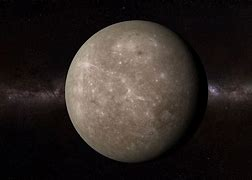

Mercury

- Mercury is the smallest planet in the Solar System and the closest to the Sun.
- Its orbit around the Sun takes 87.97 Earth days, the shortest of all the Sun's planets.
- Mercury has a very tenuous and highly variable atmosphere containing hydrogen, helium,
oxygen, sodium, calcium, potassium and water vapor.
- Mercury has a diameter of 4,879 km (3031.67 mi).
- Mercury has a dark gray, rocky surface which is covered with a thick layer of dust.